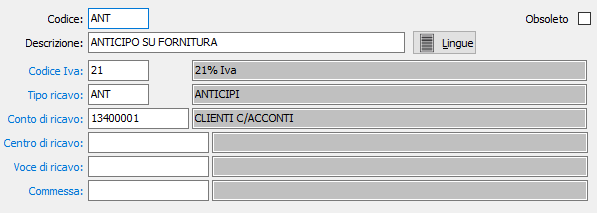

Voci recupero spese
Si tratta di una tabella che consente di creare e memorizzare voci di recupero spese, che vengono utilizzate in emissione documenti attivi (ordini, Ddt e fatture) nei tipi rigo forfetari per riaddebitare ai clienti eventuali spese sostenute. La sua creazione può pertanto essere omessa dagli utenti che non hanno esigenze in merito.

CODICE: codice alfanumerico di 3 caratteri per identificare la Voce di recupero spese. Sul campo sono attive le funzioni di ricerca (F9) sulla tabella stessa.
DESCRIZIONE: campo alfanumerico di 50 caratteri per descrivere la voce di recupero spese.
LINGUA: bottone che attiva la tabella di memorizzazione della descrizione della voce di recupero spese in esame nelle varie lingue utilizzate dall’utente.
CODICE IVA: codice alfanumerico di 3 caratteri, presente in tabella aliquote Iva, per indicare l’aliquota Iva cui è soggetta la spesa da recuperare. Sul campo sono attive le funzioni di ricerca (F9) sulla tabella Aliquote Iva.
TIPO RICAVO: codice alfanumerico di 3 caratteri, presente in tabella Tipologie di ricavo, per indicare definire il criterio di imputazione contabile del recupero spese. Sul campo sono attive le funzioni di ricerca (F9) sulla tabella Tipi ricavo.
CONTO DI RICAVO: codice alfanumerico di 8 caratteri, presente in piano dei conti, per indicare il sottoconto di ricavo a cui verrà imputato il valore della spesa da recuperare. Sul campo sono attive le funzioni di ricerca (F9) sul piano dei conti.
CENTRO DI RICAVO: campo significativo solo in presenza del modulo Contabilità analitica opportunamente configurato. Può contenere un codice alfanumerico di 15 caratteri, per definire il centro di ricavo a cui verrà imputato il valore della spesa da recuperare. Sul campo sono attive le funzioni di ricerca (F9) e manutenzione (CTRL+W) sulla tabella stessa.
VOCE DI RICAVO: campo significativo solo in presenza del modulo Contabilità analitica opportunamente configurato. Può contenere un codice alfanumerico di 15 caratteri, per definire la voce di ricavo a cui verrà imputato il valore della spesa da recuperare. Sul campo sono attive le funzioni di ricerca (F9) e manutenzione (CTRL+W) sulla tabella stessa.
COMMESSA: campo significativo solo in presenza del modulo Contabilità analitica opportunamente configurato. Può contenere un codice alfanumerico di 15 caratteri, per definire la commessa a cui verrà imputato il valore della spesa da recuperare. Sul campo sono attive le funzioni di ricerca (F9) e manutenzione (CTRL+W) sulla tabella stessa.
OBSOLETO: flag attivabile dall’utente per inibire il possibile utilizzo dell’elemento di tabella in esame nelle successive transazioni.